3 tunes, all mine. browsers used to play these without asking.
:: counter ::
you are visitor since 08.21.99 online right now: (you!)
:: static ::
static the moth lives here. he follows your cursor because it glows.
:: link me ::
save the gif to your own space. no hotlinking!
:: welcome ::
hey. you found it.
this is AFTERGLOW, my corner of the web since '99. i'm nox. i stay up too late, and this is what i do with the time: pixels, midis, and a shrine to the best monitor ever built.
the whole site is tuned for 800x600 on a real tube. if you're on one of those flat panel things, i'm sorry. it'll still load.
new here? start with the tube shrine, then sign the guestbook so static doesn't get lonely. (static is the moth. he likes your cursor.)
best viewed after midnight.
p.s. if a corner of your screen looks a bit pink, that's not my css. your tube is magnetized. press DEGAUSS.
:: updates ::
04.27.02
test patterns are up in the tube shrine. the crosshatch is the best one. you can watch your screen bend.
04.13.02
new midi in the player (nightdrive.mid). wrote it myself in a tracker so nobody can sue me.
03.30.02
layout v3.2 "insomnia" is live. v3.1 lasted two whole weeks, a record.
03.09.02
guestbook is fixed. sorry if your entry got eaten. the free cgi host ate it, not me.
02.16.02
byte's photo is on the about page. yes that's my cat. yes she's asleep on the monitor.
01.01.02
happy new year. my resolution: 1024x768. (kidding. 800x600 forever.)
hard hats on. the night log and free stuff pages are still being built. mind the loose pixels.
:: cliques + causes ::
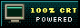
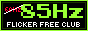
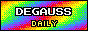
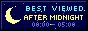
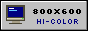
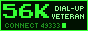
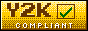
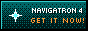
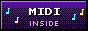
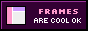
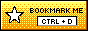
:: webring ::
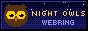
AFTERGLOW is site #41 in the NIGHT OWLS webring: personal pages by people who should be asleep.
no photo of me, sorry. here is my cat instead. her name is byte and the top of the monitor is her favourite place in the house, because it's the warmest.
handle
nox (my real name is boring)
age
16
location
third planet. timezone: nocturnal
sign
scorpio. one of the few constellations i can actually find
online since
1998, on a 33.6 modem
occupation
student, part-time insomniac
status
awake
likes
the hum a monitor makes when it wakes up
rain on the window at 3am
tracker music
pixel art you have to squint at
cold pizza
the modem handshake (yes really)
long guestbook entries
dislikes
mornings
60 Hz
flash intros with no skip button
people who steal graphics
when mom picks up the phone mid-download
popup ads
dead links (sorry about mine)
:: the rig ::
cpu
800 MHz
ram
256 MB. 128 wasn't enough for forty browser windows
video
32 MB 3D card
hard drive
40 GB. about 30 of it is music
sound
whatever came in the box, plus headphones held together with tape
modem
56k. the screech is my lullaby
os
win98 SE, and linux on the second partition (i've broken it twice)
monitor
Kilovolt K19, 19 inches of glass. she gets her own page
:: quiz results ::
which phosphor are you?
you are P22 BLUE. cool, a bit intense, glows in the dark.
what's your refresh rate?
you are 85 Hz. steady. flicker-free. slightly smug about it.
which file extension are you?
you are .mid. small, cheerful, plays anywhere.
i took these at 2am. they're scientifically valid.
:: 8 facts (10 was too many) ::
my monitor has a name. it's kathy. (cathode. kathy. …i'll see myself out)
i can whistle the 56k handshake. badly.
my first website was one page with a spinning skull. we don't talk about it.
byte has stepped on the power strip three times. all three times i lost homework.
i type with six fingers and i'm still faster than you.
favourite colour: #66FFFF.
i once drove a whole LAN party home early by putting a midi on loop.
i think in 800x600.
e-mail? ask in the guestbook. the spambots found my last address in two days.
:: the tube shrine ::
a whole page about my monitor
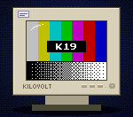
the Kilovolt K19 Pro
yes. really. this is the Kilovolt K19 and it's the best thing i own.
dad's office threw out eleven of these to buy flat panels. ELEVEN. i carried one home on the bus. it weighs 26 kilos. worth it.
wait. that badge under your screen… are you on a K19 too?? then everything on this page is about the screen you're looking at right now.
the numbers
tube
19" (18.0" you can actually see), aperture grille
grille pitch
0.25 mm
max resolution
1600 x 1200 @ 75 Hz
what i run
1024 x 768 @ 85 Hz, and 800 x 600 for this site
horizontal scan
30 to 96 kHz
vertical scan
50 to 160 Hz
phosphor
P22, medium-short persistence
anode voltage
about 27,000 volts. hence the name
weight
26 kg
power
130 W. doubles as a hand warmer
your signal
800 x 600 @ 85 Hz
:: tube vs flat, spring 2002 ::
tube (CRT)
flat (LCD)
price, 17" and up
cheap, or free from a dumpster
ouch
colours
all of them
6 bits a channel on lots of panels, plus dithering
motion
instant
25 ms of smear
resolutions
any you like
one. choose wisely
viewing angle
yes
lean left and the colours change
black
black
dark grey, glowing
weight
26 kg
ok fine
warms a cat
yes
no
verdict: tubes rule. come back in twenty years and tell me i was wrong.
:: how it works (ascii edition) ::
________
___..---'' |
___..---'' |
___________||'' |
| gun >====||==========================> | <- you
|___________||__ | are here
neck || ''---..___ |
deflection ''---..___ |
coils ''-.._|
grille + phosphor
a gun at the back fires electrons at the glass. magnets steer the beam left to right, top to bottom, 51,000 lines every second. where it hits, the phosphor glows. that's the whole trick. it's a particle accelerator on your desk and people are throwing them away.
:: words you need ::
refresh rate
how many times a second the beam repaints the whole screen. 60 Hz flickers. 85 Hz is where the headaches stop.
grille pitch
the gap between two phosphor stripes of the same colour. smaller is sharper. lean in close and you can see the stripes.
aperture grille
fine vertical wires that keep each beam on its own colour. the other kind is a shadow mask, a metal sheet full of holes.
damper wires
grille screens have one or two hair-thin wires running across to stop the grille ringing. a big tube like this one gets two. look a third of the way down your screen. now two thirds. see the faint lines? that's them. it's not broken.
degauss
the grille gets magnetized (speakers, getting moved, the planet) and colours go blotchy. the degauss button fires a coil that shakes it out. it goes BWONNG and the picture wobbles. press it. best button on the monitor. give it a rest between presses: the part that feeds the coil heats up, and until it cools the coil can't do much.
convergence
red, green and blue are three separate beams that should land on the same spot. near the corners they drift apart. that's the colour fringe on white text.
phosphor
the coating inside the glass that glows when the beam hits it. it keeps glowing for a moment afterwards. that's the afterglow. that's the name of the site. now you know.
trapezoid, parallelogram, rotation
geometry settings. the picture is bent into place by magnets, so the menu lets you bend it back yourself.
:: care and feeding ::
set your refresh rate to 85 Hz. right now. i'll wait.
keep unshielded speakers away from it.
keep magnets away from the glass. yes, including the one stuck on the front of yours. (if you ignore me, degauss is how you say sorry.)
degauss after you move it.
never open the case. the tube holds its charge for days and does not care how curious you are.
cats are allowed on top. keep the vents clear. (byte ignores this.)
try it on yours:MENU for brightness and geometry (RECALL puts it all back) :: DEGAUSS for fun :: then the test patterns
:: test patterns ::
how good is your tube?
pick one and it fills the whole screen. click anywhere, or press esc, to come back.
if anything looks wrong, that's what the MENU button is for. i take no responsibility for what you do to your trapezoid.
under construction. older entries are on a floppy somewhere. i'm looking.
:: the night log ::
things i wrote instead of sleeping
04.23.02 :: 03:12mood: smug :: hearing: the fan
found out today that most people run their monitors at 60 Hz because that's what windows picks and nobody ever changes it. NOBODY. so at lunch i went around the computer lab and set six of them to 85. nobody noticed. three people said their headache went away by last period.
i am a silent hero.
03.02.02 :: 01:47mood: static-y :: hearing: rain
thunderstorm. unplugged everything, including the phone line. (rest in peace, my last modem, august 2001. we remember.) wrote this on paper by flashlight and typed it up after. the paper version had a drawing of byte. you'll have to imagine it.
LAN party in dev's garage. i brought the K19 on the bus. 26 kilos, two changes, and one very nice driver who asked if it was a microwave. everyone else's screens looked washed out next to it.
dev's dad kept coming in to ask if we were "winning the internet". we were on a LAN. there was no internet. i said yes.
11.18.01 :: 05:55mood: !!!!! :: hearing: nothing. it was so quiet
the leonids. stood in the backyard from four until the sky went grey and counted 212 before i lost track. some of them left trails that hung there for a second or two afterwards, like the sky had long-persistence phosphor.
best thing i've ever seen that wasn't on a screen.
08.21.01 :: 02:20mood: two years old
afterglow is two today. version 1 was a single page with a tiled flame background and a midi i did not write. if you saw it, no you didn't.
thanks for 40,000 hits. i checked the logs and about 9,000 of them are me pressing reload.
06.30.01 :: 03:03mood: …
mom picked up the phone at 97% of a forty minute download.
i'm not angry. i'm just going to sit here in the dark for a while.
:: exits ::
other places to be awake
every link checked in april. if one's dead, tell me in the guestbook and i'll hold a small funeral.
The requested URL /lost.html was not found on this server.
members.orbitcities.example, port 80
(nox here. that link was alive when i checked it in april, promise. the web moves fast. back to the exits or home.)
still unpacking. more tiles when i finish them. i work slow, i do it one pixel at a time.
:: free stuff ::
take what you like
free graphics for your own page. link back if you're nice. save them to your own space. my host only gives me 3 MB of traffic an hour, and hotlinked gifs eat it fast.
backgrounds: click one to try it on
blinkies, buttons, a moth
click any graphic and its code shows up in the box.
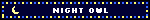
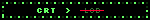
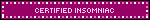
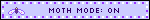
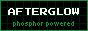
smilies for your guestbook
15x15, hand-pixelled, slightly lumpy.
:: sign the guestbook ::
prove you were here
it's the only way i know anyone's out there.
:: what people said ::
kero :: the pond04.20.02
ribbit!! ur site is so kewl. the moth keeps sitting on my cursor and now i can't click anything. 10/10 would get stuck again
~*StarryNite*~ :: found u thru the ring04.02.02
i pressed degauss like u said and my mom came in asking what the noise was lol. pressed it again after she left
moonbyte :: the moon, obviously03.31.02
the new layout looks great at 1024 too (i cheated and checked). affiliate request sent.
LCD_Larry :: the future03.15.02
flat panels are the future, kid.
nox: we'll see.
copper :: the scene02.27.02
greets. nice tune in the player. which tracker?
nox: the free one. four channels, zero manual.
Dad :: downstairs02.03.02
Very nice page. Is this what you do instead of sleeping? That monitor was supposed to go in the dumpster. Love, Dad
nox: DAD. this is a public guestbook
dev :: my garage01.22.02
you left your mouse pad here. also your monitor made mine look bad and i'm still mad about it.
anonymous12.09.01
60 Hz is fine.
nox: no.
:: currently ::
mood: wired your time: --:-- hearing: the fan playing: starhopper 3 reading: the K19 manual (again) eating: cold pizza wanting: a cable modem
online since: 08.21.99 layout: v3.2 "insomnia" last update: 04.27.02 made with: notepad, and a paint program off a magazine CD best in: 800x600, 16-bit colour, 85 Hz your signal: 800x600